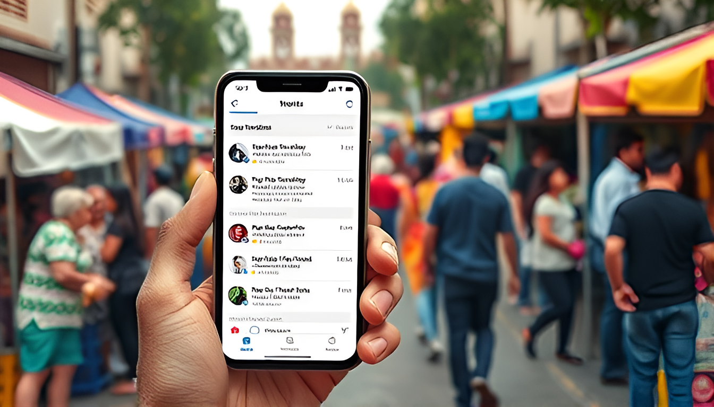
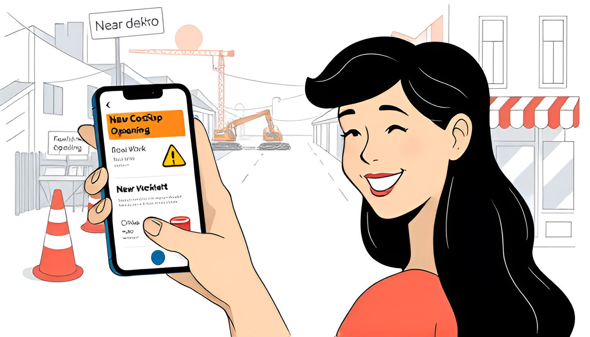
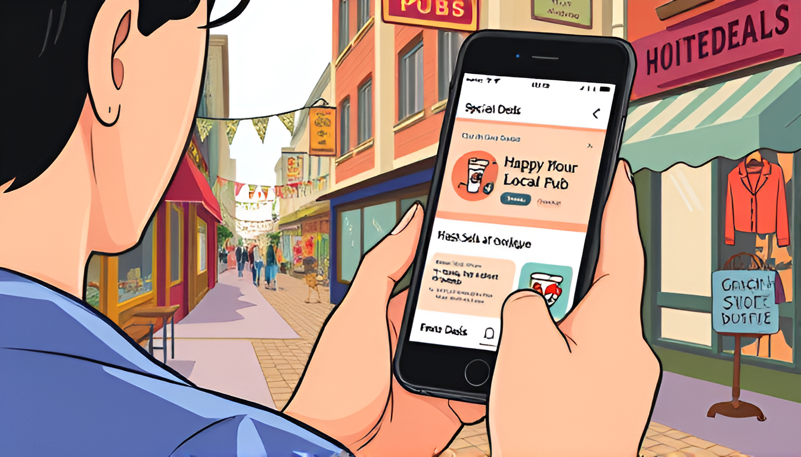
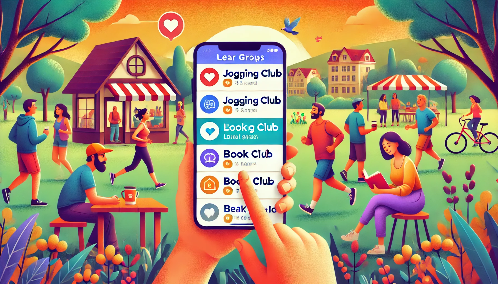
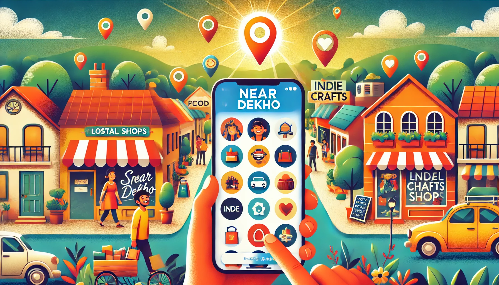

5 Reasons Why Users Love Near Dekho
Hey there, neighbor! Ever feel like you're missing out on what's happening right outside your door? Well, there's this app called NearDekho that's changing the game. Here are five awesome ways it can make your local life way more fun and connected:
1. Never Miss the Good Stuff
You know that feeling when you hear about a great local event... after it's over? Super annoying, right? With Near Dekho, those days are gone. The app keeps you in the loop about all sorts of local happenings - from street fairs to pop-up markets. It's like having a super-informed friend who always knows what's up in the neighborhood.s
2. Get the Scoop on Local News
Global news is everywhere, but what about the stuff that's actually affecting your street? NearDekho's got you covered. Road work on your commute? New coffee shop opening up? Whatever's going on in your hood, you'll know about it. It's like having a neighborhood newspaper in your pocket.
3. Snag Sweet Deals from Local Shops
Who doesn't love a good bargain? NearDekho connects you with local businesses offering special deals. Maybe it's happy hour at the new pub or a flash sale at that boutique you've been meaning to check out. You'll be the first to know, and your wallet will thank you.
4. Meet Your Neighbors (Finally!)
NearDekho isn't just about info - it's about people. The app helps you connect with folks in your area who share your interests. Like running? Join a local jogging group. Love books? Find a nearby book club. It's a great way to turn neighbors into friends.
5. Support Your Local Shops (and Feel Good About It)
Shopping local feels good, right? Near Dekho makes it easy to discover and support businesses in your area. From family-run restaurants to indie craft shops, you can find and connect with all sorts of local gems. It's not just shopping - it's about making your community stronger.
NearDekho isn't just another app on your phone. It's like a bridge connecting you to everything cool, useful, and important in your neighborhood. It turns every scroll into a stroll through your local area, helping you discover, save money, make friends, and feel more connected to where you live.
So why not give it a try? Download NearDekho and start exploring what's been right outside your door all along. You might be surprised at how much awesome stuff is happening in your own backyard!
#JaipurNews #PinkCity #LocalUpdates #JaipurEvents #Jaipur #JaipurUpdates #Hyperlocal #NearDekho #OneCityOneApp